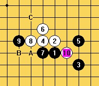
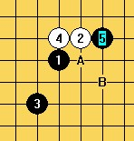
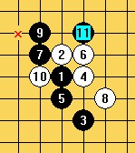
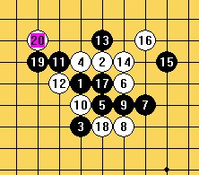

大家讨论下RIF规则下的研究进展
#1 大家讨论下RIF规则下的研究进展 作者：没定式随便下 发表时间：2009-4-30 9:21:30
最近很少看到有人下恒寒星,银名月这些局面了,是不是这些开局都终结了啊?我知道最近的进展应该是明星和岚月的终结吧,或者很早就终结了只是我不知道.疏星瑞星斜月这些好象是很多人都热衷于研究的,我想问以下几个问题.
问题一:
=======上图对应的爱五子棋谱代码如下，以便你拆解：========
h8h9i6g9f9
======================================================
山名这个局面是什么结论?
问题二:
=======上图对应的爱五子棋谱代码如下，以便你拆解：========
h8h9j7g9
======================================================
名新这个是什么结论?
问题三:
=======上图对应的爱五子棋谱代码如下，以便你拆解：========
h8h9j9g8i8
======================================================
=======上图对应的爱五子棋谱代码如下，以便你拆解：========
h8h9j9g8f7
======================================================
山残这两个5哪个更好?各是什么结论?
请老师们指点下,我也好有个大致的研究思路,只需要结论就可以了,不需要棋谱.
最后还想了解一下,山,残,名,新,寒,恒,银这几个其中哪些是确定能必胜的了?
［ 有志青年 于 2010-5-13 10:18:07 时奖励此帖[金币加 20 威望加1］
#2 Re:大家讨论下RIF规则下的研究进展 作者：淡红的秋樱 发表时间：2009-4-30 9:39:17
=======上图对应的爱五子棋谱代码如下，以便你拆解：========
h8h9i7g9f9
======================================================
提示一个，有一个图和这个图有些像。
#3 Re:大家讨论下RIF规则下的研究进展 作者：流逝 发表时间：2009-4-30 15:20:19
=======上图对应的爱五子棋谱代码如下，以便你拆解：========
h8g9i6h9f9g8g7f7
======================================================
=======上图对应的爱五子棋谱代码如下，以便你拆解：========
h8g9i6h9f9f8
======================================================
这个里面有几个变化我手上还没地毯胜，不过黑大优是可以肯定的。
=======上图对应的爱五子棋谱代码如下，以便你拆解：========
h8h9j7g9j9g10g8f9e9i8
======================================================
这一路之后，似乎也没听到谁地毯完了，结论也是黑大优。。
至于残月2打 更不可能地毯必胜了。
你问的那几句开局，除了恒寒可以地毯终结，其他山残名新银都没有地毯吧，至少我手上没有地毯胜的谱
另外说句岚月早在一年前甚至更久之前就已经被终结。我是记不清楚了。
明星到目前为止应该是快终结了，
［ 逆刃 于 2009-4-30 15:40:46 时奖励此帖[金币加 20 威望加1］
#4 Re:大家讨论下RIF规则下的研究进展 作者：游戏人间 发表时间：2009-4-30 15:28:48
 楼上的大师天天见~又开始刷屏发图了~
楼上的大师天天见~又开始刷屏发图了~
#5 Re:大家讨论下RIF规则下的研究进展 作者：流逝 发表时间：2009-4-30 15:36:14
 死大鱼 老子再刷也没你刷得多吧
死大鱼 老子再刷也没你刷得多吧
#6 Re:大家讨论下RIF规则下的研究进展 作者：没定式随便下 发表时间：2009-4-30 22:28:22
刚刚看到天羽老师的一个帖子，ShowPost.asp?ThreadID=5173
=======上图对应的爱五子棋谱代码如下，以便你拆解：========
h8h9j9g8f7
======================================================
难道这个5真的必胜了？那不就是残月必胜了吗？！
#7 Re:大家讨论下RIF规则下的研究进展 作者：流逝 发表时间：2009-5-1 0:36:24
这个肯定必不了的 天羽老师没事忽悠大家好玩呢
#8 Re:大家讨论下RIF规则下的研究进展 作者：越狱行辕 发表时间：2009-5-2 20:30:36
=======上图对应的爱五子棋谱代码如下，以便你拆解：========
h8h9j7g9j9g10g8f9e9i8f11
======================================================
#9 Re:大家讨论下RIF规则下的研究进展 作者：没定式随便下 发表时间：2009-5-2 20:52:06
楼上的莫非是说这个11能必胜？#10 Re:大家讨论下RIF规则下的研究进展 作者：学生刀 发表时间：2009-5-2 20:55:17
=======上图对应的爱五子棋谱代码如下，以便你拆解：========
h8h9j7g9j9g10g8f9e9i8f11
======================================================
这就是 不拆了反正我临场也能下出最强的概念必胜
#11 Re:大家讨论下RIF规则下的研究进展 作者：淡红的秋樱 发表时间：2009-5-2 22:12:25
楼上的11，我猜慢棋都必胜不了。去查一下email的对局，黑大优的开局的胜率，还不是一半对一半的。
#12 Re:Re:大家讨论下RIF规则下的研究进展 作者：忧郁的双眼 发表时间：2009-5-2 22:25:45
引用：这个。。。。那就强大了！！！
原文由 学生刀 发表于 2009-5-2 20:55:17 :
=======上图对应的爱五子棋谱代码如下，以便你拆解：========
h8h9j7g9j9g10g8f9e9i8f11
======================================================这就是 不拆了反正我临场也能下出最强的概念必胜
#13 Re:大家讨论下RIF规则下的研究进展 作者：流逝 发表时间：2009-5-3 1:48:22
偷偷的说一句 这个11可以实战必胜
#14 Re:大家讨论下RIF规则下的研究进展 作者：快乐天羽 发表时间：2009-5-3 11:16:09
流大师在吹牛了，这个11，后边有3-4个白超强的点，有2个还有超级大骗，黑不小心会被秒的。你要想比赛用，你自己要多拆拆，小心自己掉进自己的陷阱。肯定说一句，这个11是骗人的，嘿嘿。［ 潇洒 于 2009-5-3 11:26:17 时奖励此帖[金币加 20 威望加1］
#15 Re:大家讨论下RIF规则下的研究进展 作者：空恨 发表时间：2009-5-3 11:58:46
黑优开局之所以没人下是因为大部分变化都唯一了。就算不唯一碰上棋谱达人你没什么机会。可以确定有结论的开局（包括白必胜）有13局。明星还不知道啥情况。我知道的结论是唯一强防。不过据说有人已经终结了。松月感觉也有希望。不过好久没做过谱了。就最近上来看看。［ 26 于 2009-5-3 13:20:37 时花20金币送鲜花一朵］
#16 Re:大家讨论下RIF规则下的研究进展 作者：没定式随便下 发表时间：2009-5-3 13:12:03
花浦云雨溪峡游彗金岚水，还有两个莫非是恒寒？恒寒都能终结真是厉害啊！［ 26 于 2009-5-3 13:21:06 时花20金币送鲜花一朵］
#17 Re:大家讨论下RIF规则下的研究进展 作者：26 发表时间：2009-5-3 13:23:35
听闻是恒寒。
我也觉得现在的终结者们太厉害了，简直让连珠走投无路。
#18 Re:大家讨论下RIF规则下的研究进展 作者：wd1988 发表时间：2009-5-3 14:08:17
恒寒肯定没终结，至今也没有人敢真正站出来说：“我本人手里握着地毯谱，恒寒绝对已经终结！”（毛巾谱就别拿来现了，我还有疏一松三必胜的毛巾呢）
最多就弱弱地出来说一句：我听说某某大师说的，恒寒(好像)已经终结了。。。。
或者挺出来说一句：我恒寒实战能够必胜（就是没真正的地毯谱）！
这都是不严谨的说法，照这么说，我斜一早就必胜了
#19 Re:大家讨论下RIF规则下的研究进展 作者：空恨 发表时间：2009-5-3 14:23:06
寒恒地毯谱我都出售过了。我手里的寒恒就是彻底地毯的。
#20 Re:大家讨论下RIF规则下的研究进展 作者：wd1988 发表时间：2009-5-3 14:28:07
哦？多少钱？我买了#21 Re:大家讨论下RIF规则下的研究进展 作者：空恨 发表时间：2009-5-3 14:29:11
5千。觉得贵自己慢慢整。#22 Re:大家讨论下RIF规则下的研究进展 作者：游戏人间 发表时间：2009-5-3 14:29:46
挺楼上的大师。。。等下估计楼上的楼上又要让人拿出来了。。。付费吧。。可以看到的。
#23 Re:大家讨论下RIF规则下的研究进展 作者：wd1988 发表时间：2009-5-3 14:33:07
5千？假的。继续围观。。。。#24 Re:大家讨论下RIF规则下的研究进展 作者：空恨 发表时间：2009-5-3 14:35:12
呵呵。我说的话没假的。我从不放假消息。
#25 Re:大家讨论下RIF规则下的研究进展 作者：空恨 发表时间：2009-5-3 14:37:59
拿我没终结的开局换也可以。只要我觉得合适就换。#26 Re:大家讨论下RIF规则下的研究进展 作者：wd1988 发表时间：2009-5-3 14:38:01
我出售斜一地毯谱，5000元人民币，先给2500，给谱，验证无误再给剩下的2500#27 Re:大家讨论下RIF规则下的研究进展 作者：游戏人间 发表时间：2009-5-3 14:51:48
恒寒星两个开局才5000...一个斜1也要5000...唉。。那我出售松三加松一完美地毯谱。。想要的出价吧。。少于5位数的免谈
#28 Re:Re:大家讨论下RIF规则下的研究进展 作者：冰清 发表时间：2009-5-3 14:52:04
引用：大师赚这么多钱还是拿出来捐点给无镝比赛用吧。
原文由 空恨 发表于 2009-5-3 14:23:06 :寒恒地毯谱我都出售过了。我手里的寒恒就是彻底地毯的。
#29 Re:大家讨论下RIF规则下的研究进展 作者：wd1988 发表时间：2009-5-3 14:53:56
我附送斜二八卦黑必胜地毯，可以了吧#30 Re:Re:大家讨论下RIF规则下的研究进展 作者：冰清 发表时间：2009-5-3 14:58:43
引用：松三的我还有点想要，价格可以少点吗？怎么付钱？
原文由 游戏人间 发表于 2009-5-3 14:51:48 :恒寒星两个开局才5000...一个斜1也要5000...唉。。那我出售松三加松一完美地毯谱。。想要的出价吧。。少于5位数的免谈
#31 Re:大家讨论下RIF规则下的研究进展 作者：游戏人间 发表时间：2009-5-3 15:30:32
哈。。我说着玩的。。楼上还当真了。。松三的又不是一个人完成的。怎么可能我一个人说卖就卖呢。。再说我是没做成完美地毯谱~#32 Re:大家讨论下RIF规则下的研究进展 作者：空恨 发表时间：2009-5-3 15:53:01
松三也差不多了吧.原来研究的时候记得没剩几个点了。后来就不干了。
#33 Re:大家讨论下RIF规则下的研究进展 作者：游戏人间 发表时间：2009-5-3 16:02:24
杀是杀了。。但是想地毯。。。谁有功夫谁去做了。。有几个点。做地毯的话每个点都得摆一遍，麻烦的要死。像我这么懒得人绝对不会去做完整地毯。#34 Re:大家讨论下RIF规则下的研究进展 作者：小飞 发表时间：2009-5-3 17:05:11
 不是我明白．．实在这个世界变化太快，原来楼上等达人们已经把那么多开局都给地毯了，佩服佩服．．．．．．
不是我明白．．实在这个世界变化太快，原来楼上等达人们已经把那么多开局都给地毯了，佩服佩服．．．．．．
#35 Re:大家讨论下RIF规则下的研究进展 作者：二十七刀 发表时间：2009-5-3 17:16:02
过期作废。
强烈谴责恨恨卖了5000自己装口袋，
要求给大鱼参加世界杯。
#36 Re:大家讨论下RIF规则下的研究进展 作者：自来水 发表时间：2009-5-3 17:20:58
越说越玄了……………
我除了围观就不再说啥了
#37 Re:大家讨论下RIF规则下的研究进展 作者：流逝 发表时间：2009-5-3 18:02:03
笑死 这话题咋越扯越远了#38 Re:大家讨论下RIF规则下的研究进展 作者：wd1988 发表时间：2009-5-3 19:46:32
最讨厌的就是“差不多了”、“没剩几个点了”、“绝对不会去做完整地毯”这种不负责任的说法。
那说了有个P意思？忽悠谁呀，我斜一也“没剩几个点了”，也“接近地毯了”，我卖二百五，谁要买？
#39 Re:大家讨论下RIF规则下的研究进展 作者：gerbo 发表时间：2009-5-3 19:55:06
弱弱的说下 ,斜一这两个貌似没看过.
=======上图对应的爱五子棋谱代码如下，以便你拆解：========
h8h9g7i9j9f9
======================================================
=======上图对应的爱五子棋谱代码如下，以便你拆解：========
h8h9g7i9j9e9
======================================================
#40 Re:大家讨论下RIF规则下的研究进展 作者：自来水 发表时间：2009-5-3 20:46:40
LS的弱6 黑7 J8直接必胜（G7也许是必胜），第一个图本站还有谱#41 Re:大家讨论下RIF规则下的研究进展 作者：游戏人间 发表时间：2009-5-3 21:20:00
完整地毯只有交给天涯独行客这样的超人去慢慢往上完成了。。难怪有人那么欣赏他呢。。呵呵物以类聚#42 Re:大家讨论下RIF规则下的研究进展 作者：空恨 发表时间：2009-5-3 21:29:16
我不怎么喜欢和人交流的。天涯恒心厉害。理论欠缺。不过寒星我从简谱到终结。基本都一人做出来的。要说用到什么的话。就用我徒弟的机器了。我机器太破了。所以后来不研究了。
#43 Re:大家讨论下RIF规则下的研究进展 作者：极地剑客 发表时间：2009-5-3 22:03:39
哪个啥时候出售瑞必胜列?呵呵~
#44 Re:大家讨论下RIF规则下的研究进展 作者：浪人痴痴 发表时间：2009-5-3 22:05:10
有卖软件的，有卖棋谱的。也有卖比赛的。 到底是为了什么呢？
#45 Re:大家讨论下RIF规则下的研究进展 作者：vmbdi 发表时间：2009-5-4 1:03:15
不太相信這類必勝棋譜 國際比賽黑優局亦不能勝 這就是最好的證明#46 Re:大家讨论下RIF规则下的研究进展 作者：游戏人间 发表时间：2009-5-4 8:15:47
那是比赛的人研究不够。。。
#47 Re:大家讨论下RIF规则下的研究进展 作者：游戏人间 发表时间：2009-5-4 8:18:08
根据我的经验。。一名棋手光是把流行变化吃透就需要1-2年。如果再加上各种优势局变化。全部理解大概要3-4年甚至5年以上。
而实战往往还需要计算能力。单纯练习计算2.3年。那么再加上比赛经验的积累。现在参加比赛的选手有多少人能达到这个时间的要求呢。这也是现在的比赛为什么优势局也可能取胜的原因。
#48 Re:大家讨论下RIF规则下的研究进展 作者：游戏人间 发表时间：2009-5-4 8:20:43
顺便再说下。。现在经常有人把棋手分类为网络型和实战型。。过于强调研究或者计算方面。。其实这样的棋手都是不全面的。。
一名真正的职业棋手必须研究达到网络棋手的深度。计算在实战棋手中也出类拔萃。这样才是勉强合格的棋手。否则都是畸形的。
［ 小红眼镜 于 2009-5-4 8:32:42 时花20金币送鲜花一朵］
［ 慕容晓文 于 2011-5-21 9:27:57 时花20金币送鲜花一朵］
#49 Re:大家讨论下RIF规则下的研究进展 作者：无尽 发表时间：2009-5-4 8:33:10
目前五子棋还没有真正职业化，有这样时间练习的人聊聊可数
网络型和实战型很早就分类了吧，以前听一些评论似乎语气中有点看不起网络型的。。
#50 Re:大家讨论下RIF规则下的研究进展 作者：厦门小天 发表时间：2009-5-4 10:03:14
-_-。耍耍嘴皮子可不是挑战权威~~#51 Re:大家讨论下RIF规则下的研究进展 作者：游戏人间 发表时间：2009-5-4 11:45:13
什么时候我在全国赛打不进前30了。。。五子棋就算职业化起来了。。#52 Re:大家讨论下RIF规则下的研究进展 作者：无尽 发表时间：2009-5-4 11:46:56
这个。。只要不是故意输。。估计。。。。#53 Re:大家讨论下RIF规则下的研究进展 作者：越狱行辕 发表时间：2009-5-4 11:58:41
那啥 既然 斜 一 斜二 地毯谱都有卖的了，我也没啥好卖的卖 疏星瑞星地毯谱吧#54 Re:大家讨论下RIF规则下的研究进展 作者：雨一直下 发表时间：2009-5-4 13:19:12
同意大鱼48楼的发言。真正的高手应该是研究和实战都强的。不过做到这些的确需要时间的磨砺，冰冻三尺，非一日之寒呀。
比如YODALS、JAMESLS、满江LS、夜火LS、小天LS、大鱼LS，海月LS、米兰LS、小白LS、然后流逝LS也算一个吧，有研究也有实战。
#55 Re:大家讨论下RIF规则下的研究进展 作者：wd1988 发表时间：2009-5-4 15:04:31
唉，比起LS，我更喜欢称他们为大师。因为他们中的99%都没教过我，1%可能在我的谱里面有那么几路变化做了注释和标记。。。就这么称LS，实在是勉为其难，只好统称大师。。。。
#56 Re:大家讨论下RIF规则下的研究进展 作者：学生刀 发表时间：2009-5-4 15:21:15
我眼里只有刀魂大师
#57 Re:大家讨论下RIF规则下的研究进展 作者：岳麓小棋后 发表时间：2009-5-4 18:54:30
棋谱真能乱卖吗？你不怕前脚花5000卖出去，后脚人家人家4000卖给N个人
#58 Re:大家讨论下RIF规则下的研究进展 作者：学生刀 发表时间：2009-5-4 19:14:28
卖棋谱要统一时间发货 ， 想要的人也没多少
#59 Re:大家讨论下RIF规则下的研究进展 作者：wd1988 发表时间：2009-5-5 8:00:54
嘿嘿，我都赚了5000了，别人真拿4000卖给另外的我也不在乎了#60 Re:大家讨论下RIF规则下的研究进展 作者：屏蔽 发表时间：2009-5-5 8:33:33
我真的真的很想围观这帖……大家原谅我……#61 Re:大家讨论下RIF规则下的研究进展 作者：快乐天羽 发表时间：2009-5-16 17:23:48
雨丫头，我也有实战呀，怎么把我忘了。找打是吧。#62 Re:大家讨论下RIF规则下的研究进展 作者：游戏人间 发表时间：2009-5-16 17:56:07
恩楼上的会实战。。经常在三手实战。。
#63 Re:大家讨论下RIF规则下的研究进展 作者：流逝 发表时间：2009-5-17 6:51:40
我再次路过
#64 Re:大家讨论下RIF规则下的研究进展 作者：wd1988 发表时间：2009-5-17 11:42:31
围观大师讽刺大师#65 Re:大家讨论下RIF规则下的研究进展 作者：陨落之城 发表时间：2009-5-17 15:09:40
可以给我们新手一个明确的信息吗？到底有几个开局有结论了？#66 Re:大家讨论下RIF规则下的研究进展 作者：游戏人间 发表时间：2009-5-17 15:20:44
大概只有14个开局有具体的地毯谱。。其他开局的结论都是大概的意思。。。也许会存在妙手
#67 Re:大家讨论下RIF规则下的研究进展 作者：忧郁的双眼 发表时间：2009-5-17 15:46:22
花浦云雨溪峡
残？
山岚？
金恒
寒？
#68 Re:大家讨论下RIF规则下的研究进展 作者：游戏人间 发表时间：2009-5-17 15:51:30
山月谁那么有体力地毯噢。。。我是不行。。。谁行谁来#69 Re:大家讨论下RIF规则下的研究进展 作者：岳麓小棋后 发表时间：2009-5-17 15:57:12
花浦云雨溪峡恒寒游彗岚金水新 银明？#70 Re:大家讨论下RIF规则下的研究进展 作者：游戏人间 发表时间：2009-5-17 16:37:44
花浦云雨溪峡恒寒游彗岚金水。。这些是明确必胜的。地毯谱也存在的。
银月据说地毯了。。。不太清楚我感觉交换太多就没继续做下去。
新月。。近期没关注过，原来是存在一路号称无法地毯的白防点的。现在不知道大概早有高人地毯了。毕竟那路只是交换多，黑优势是毋庸置疑的。
明月。。和山月共通的那路虽然是必胜但是交换依然很多。我是没地毯。好像天羽也没地毯。。不知道谁那么有体力完成了。
山月。。和明月共通，残月共通，这两个好像都没地毯。
明星。。据说杀了但是也没看到地毯谱。反正我这始终有疑难点杀不掉。
残月。。没人敢说能地毯。。。
松月。。就假设松月天地止白4地毯了。。那么银月地毯不了松月就永远没地毯。。事实上天地止也没得地毯。能不能黑杀都是疑问。
长星，流星，疏星。。为什么放在一起说。因为可以还原同一个形状。结论。。在我有生之年是不知道了。。
斜月，丘月，黑大优，也许实战可以下成黑必胜。但是做棋谱。。超人去完成吧~
瑞星。。连珠之巅啊~~~可能昨天我说黑优今天就变白优明天又变平衡了。。。
［ 潇洒 于 2009-5-17 17:01:26 时奖励此帖[金币加 20 威望加1］
［ 隐藏菜系 于 2009-5-17 17:29:42 时花20金币送鲜花一朵］
［ 忧郁的双眼 于 2009-5-17 17:31:11 时花20金币送鲜花一朵］
［ 失落刀 于 2009-5-17 18:11:55 时花20金币送鲜花一朵］
#71 Re:大家讨论下RIF规则下的研究进展 作者：忧郁的双眼 发表时间：2009-5-17 17:32:09
好多东西都是可以弄出终结谱
但把终结谱弄成地毯。。。。
真的是超人完成的东西。。。
#72 Re:大家讨论下RIF规则下的研究进展 作者：隐藏菜系 发表时间：2009-5-17 17:36:26
弱弱的问一句哈~ 吴镝老师说的“明确必胜”中的“必胜”指的是几打必胜啊？还是哪一种规则下的必胜？ 我知道这问题有点白痴。。但我真的不知道但很想搞清楚。。先谢谢啦~！
我知道这问题有点白痴。。但我真的不知道但很想搞清楚。。先谢谢啦~！
#73 Re:Re:大家讨论下RIF规则下的研究进展 作者：岳麓小棋后 发表时间：2009-5-17 17:39:16
引用：
原文由 隐藏菜系 发表于 2009-5-17 17:36:26 :
弱弱的问一句哈~ 吴镝老师说的“明确必胜”中的“必胜”指的是几打必胜啊？还是哪一种规则下的必胜？
#74 Re:大家讨论下RIF规则下的研究进展 作者：游戏人间 发表时间：2009-5-17 17:56:17
毫无疑问是2打了#75 Re:大家讨论下RIF规则下的研究进展 作者：隐藏菜系 发表时间：2009-5-17 18:00:04
明白了！！谢谢 岳麓小棋后LS和吴镝LS ！！#76 Re:大家讨论下RIF规则下的研究进展 作者：耳痛 发表时间：2009-5-18 6:13:40
坐等落价购买
现在围观进行时
#77 Re:大家讨论下RIF规则下的研究进展 作者：Solmyr 发表时间：2009-5-18 8:40:05
 围观围观！哇！！！各位天才大师太强大啦！
围观围观！哇！！！各位天才大师太强大啦！
#78 Re:大家讨论下RIF规则下的研究进展 作者：鬃毛 发表时间：2009-5-19 22:48:47
出售斜月2打必胜 注意是第2打点的 地毯 不是1打#79 Re:大家讨论下RIF规则下的研究进展 作者：流逝 发表时间：2009-5-21 16:49:01
2打必胜多少钱啊#80 Re:大家讨论下RIF规则下的研究进展 作者：没定式随便下 发表时间：2009-5-23 9:02:02
斜一是迟早要地毯的，斜二就更复杂了，做谱黑累死。有的谱根本没有杀完就标成c了，c后面居然什么都没有，还是相信自己做的谱。#81 Re:大家讨论下RIF规则下的研究进展 作者：大胖墩 发表时间：2009-5-23 9:23:15
哎 都是LS 大师 那些批评谁谁的 我怎么比赛就没见过您呢 我名气小 别人肉搜索我HO 来实战比赛被 啥谱不谱 多无趣啊 来打打现实比赛 看看自己研究的东西 你能用多少啊 估计摆个开局 下个神奇两打你就投了。。引用流逝老师的一句无知真可怕
#82 Re:Re:大家讨论下RIF规则下的研究进展 作者：鬃毛 发表时间：2009-5-25 3:13:49
引用：
原文由 没定式随便下 发表于 2009-5-23 9:02:02 :
斜一是迟早要地毯的，斜二就更复杂了，做谱黑累死。有的谱根本没有杀完就标成c了，c后面居然什么都没有，还是相信自己做的谱。
早在06年的时候 有人就问过我斜A的结论 我当时就非常明确的给出了必胜的结论 所谓的最强6我也至少给出了2套不同的杀法 至于地毯纯属一群无聊的人不动脑子的想法 拾拾牙惠然后宣布某某变化我终结了 真的很无聊
至于你说的C后面什么都没有了 仅仅只能说你对变化 对局的理解不够 我认为有些东西根本没有必要去地毯 必胜需要的仅仅是思路 而不是全部的43 井底之蛙怎知世界之大？连珠的魅力就是被那些无知的人 地毯掉的！
#83 Re:大家讨论下RIF规则下的研究进展 作者：王小 发表时间：2009-5-25 10:14:44
有人喜欢地毯无所谓，有人喜欢实战无所谓。
就看你个人喜欢了三。下棋不是背谱，我们看必胜应该是从中学习下棋的道理而不是简单背下来。
我们研究棋是提高自己的计算能力，而不是为了研究而研究。我们不能把很多东西地毯掉，但是
我们知道下棋的道理，不地毯，至少也能控制棋局。比赛不仅是比技术还是比人品比心理比耐心，
现在瑞星虽然很多人说要和棋，你看人家周可鼎再名人赛都开瑞星，黑也赢白也赢，这是为啥？
所以，对棋局本来的理解，和精准的计算力才是基础，良好的心理素质才是正道。平衡的心态才
能走远。
你的水平越高其实能下的开局就越少，因为你的对手也很强！（RIF 可能大师们之间的对战可能只有 瑞星和 疏星了 ），但是对我们这些菜鸟来说松月，丘月，斜月 可以算较平衡开局，恒寒，山月，金星，水月，岚月，残月，名月，白不好下（大师们说很多都地毯了。。。），但是还是可以一战的，你看南通高校的比赛有好多寒星开局，当然很多漏洞百出，但是至少说明对于我们可以下，呵呵。
［ lfzxdh 于 2009-6-16 20:33:00 时花20金币送鲜花一朵］
#84 Re:大家讨论下RIF规则下的研究进展 作者：失落刀 发表时间：2009-5-25 20:10:00
新月唯一的变化#85 Re:大家讨论下RIF规则下的研究进展 作者：失落刀 发表时间：2009-5-25 20:14:47
名月可下变化如图及84楼的图。#86 Re:大家讨论下RIF规则下的研究进展 作者：失落刀 发表时间：2009-5-25 20:21:16
山月可下变化如图及85楼的图。#87 Re:大家讨论下RIF规则下的研究进展 作者：失落刀 发表时间：2009-5-25 20:26:33
明星唯一变化#88 Re:大家讨论下RIF规则下的研究进展 作者：wrwak 发表时间：2009-5-27 21:50:29
=======上图对应的爱五子棋谱代码如下，以便你拆解：========
=======上图对应的爱五子棋谱代码如下，以便你拆解：========
h8i9h6h9i7j8k7j6j7h7g9g8i10j9l9k10g6i6f9
============================================================================================================
这样白棋怎么防？
#89 Re:大家讨论下RIF规则下的研究进展 作者：流逝 发表时间：2009-6-4 3:10:15
纠正87楼的。这个20已经被地毯了，20在19下面是无法的地毯的。
ps：明星应该已经被全部地毯了。
#90 Re:大家讨论下RIF规则下的研究进展 作者：流逝 发表时间：2009-6-4 3:14:18
82楼的也不知道是哪位大师。。。06年就把斜一最强6搞了两套杀出来，还把斜2地毯了，膜拜一下。。
#91 Re:Re:大家讨论下RIF规则下的研究进展 作者：鬃毛 发表时间：2009-6-5 22:45:19
引用：朵朵~~~~~~~~~~~~~~~
原文由 流逝 发表于 2009-6-4 3:14:18 :
82楼的也不知道是哪位大师。。。06年就把斜一最强6搞了两套杀出来，还把斜2地毯了，膜拜一下。。
#92 Re:大家讨论下RIF规则下的研究进展 作者：不知 发表时间：2009-6-5 22:49:08
不得不跟帖膜拜一下斜月宗师..跟住大师脚步走~
#93 Re:大家讨论下RIF规则下的研究进展 作者：南姑钉子户 发表时间：2009-6-6 0:43:41
..........
原来是你啊
#94 Re:大家讨论下RIF规则下的研究进展 作者：极地剑客 发表时间：2009-6-9 20:18:12
都是无敌模式的神人啊~~~~~~~~~~~~~~永世名人附体了~~~~~~~~~~~~~~~~~~~~~~~~~~~~~~#95 Re:大家讨论下RIF规则下的研究进展 作者：失落刀 发表时间：2009-6-21 17:00:08
ShowPost.asp?ThreadID=7525天羽-小仙联合公布---明星确实终结了#96 Re:大家讨论下RIF规则下的研究进展 作者：gerbo 发表时间：2009-7-28 21:26:29
=======上图对应的爱五子棋谱代码如下，以便你拆解：========
h8h9j7g9j9g10g8f9e9i8e8
======================================================这里也很黑优吧,地毯啥的不清楚,同时也要感谢我的朋友跟我一起拆了这个变化,呵呵.我是边走边学.
#97 Re:大家讨论下RIF规则下的研究进展 作者：索非亚 发表时间：2009-8-28 15:16:22
请问下各位老师，银月二打好像是超级大冷门了，难道银月二打可以必了么？#98 Re:大家讨论下RIF规则下的研究进展 作者：极地剑客 发表时间：2009-12-9 8:32:49
从目前有的资料来说~感觉就连以前的传统四大平衡开局2打各种局面都被拆的差不多了~~不过我相信很多东西实战纯人脑肯定是下不出来的~~许多新结论都是连续妙手的~#99 Re:大家讨论下RIF规则下的研究进展 作者：忧郁的双眼 发表时间：2009-12-10 0:48:50
有结论的都是唯一杀
不是唯一防
哈哈
超NB的大师们
#100 Re:大家讨论下RIF规则下的研究进展 作者：极地剑客 发表时间：2009-12-10 0:49:52
顶楼上滴大师~~~~#101 Re:大家讨论下RIF规则下的研究进展 作者：小帮帮 发表时间：2009-12-14 16:05:19
好像只能围观！#102 Re:Re:大家讨论下RIF规则下的研究进展 作者：aabb 发表时间：2010-1-20 14:22:47
引用：
原文由 鬃毛 发表于 2009-5-19 22:48:47 :
出售斜月2打必胜 注意是第2打点的 地毯 不是1打
膜拜。。
#103 Re:大家讨论下RIF规则下的研究进展 作者：龙小小 发表时间：2010-5-14 21:33:17

#104 Re:大家讨论下RIF规则下的研究进展 作者：游戏人间 发表时间：2010-5-15 13:09:53
=======上图对应的爱五子棋谱代码如下，以便你拆解：========
h8h9j7g9j9g10g8f9e9i8e8f8f11e7d6i7
======================================================
这个白必胜
#105 Re:大家讨论下RIF规则下的研究进展 作者：gerbo 发表时间：2010-5-16 7:19:27
大鱼老师：
黑棋右边的活三或者跳活三似乎可以化解掉白的威胁。
=======上图对应的爱五子棋谱代码如下，以便你拆解：========
h8h9j7g9j9g10g8f9e9i8e8f8f11e7d6i7j10j8i9g7f7
======================================================
这个属于研究范畴，也不好详细过问了，只例举了一例局面，望能指点一二。
#106 Re:Re:大家讨论下RIF规则下的研究进展 作者：小帮帮 发表时间：2010-6-26 12:54:15
=======上图对应的爱五子棋谱代码如下，以便你拆解：========
h8h9j7g9j9g10g8f9e9i8e8f8f11e7d6i7j10j8i9g7f7h6g5l8
======================================================
17在18的位置，似乎蛮难的
#107 Re:大家讨论下RIF规则下的研究进展 作者：小滚滚 发表时间：2010-6-27 11:42:19
死大鱼 老子再刷也没你刷得多吧#108 Re:大家讨论下RIF规则下的研究进展 作者：小滚滚 发表时间：2010-6-27 11:44:13
有一个图和这个图有些像#109 Re:大家讨论下RIF规则下的研究进展 作者：蓝剑萧风 发表时间：2010-6-29 18:56:04
围观
#110 Re:大家讨论下RIF规则下的研究进展 作者：漓冥 发表时间：2010-7-5 21:45:31

#111 Re:大家讨论下RIF规则下的研究进展 作者：我爱江俊男 发表时间：2011-3-5 10:03:50
=======上图对应的爱五子棋谱代码如下，以便你拆解：========
h8i9g6h9j9j8k7i7
======================================================
这个变化不可下吗？？
看85L的意思，这个6必败了？？
［此帖子已被 我爱江俊男 在 2011-3-5 10:06:57 编辑过］
［此帖子已被 我爱江俊男 在 2011-3-5 10:08:24 编辑过］
#112 Re:大家讨论下RIF规则下的研究进展 作者：逆刃 发表时间：2011-3-6 10:42:53
回LS，确实必败~！#113 Re:大家讨论下RIF规则下的研究进展 作者：海月 发表时间：2012-6-6 16:16:13
散场了没，看来来晚了。。。
#114 Re:大家讨论下RIF规则下的研究进展 作者：极地剑客 发表时间：2012-6-6 17:29:21
目测山口和rif差不多了#115 Re:大家讨论下RIF规则下的研究进展 作者：小滚滚 发表时间：2012-11-12 12:29:57
===================================
本区域内容需要威望值≥10才可见!
===================================
#116 Re:大家讨论下RIF规则下的研究进展 作者：屏蔽 发表时间：2012-11-12 21:52:23
楼上不要卖萌。#117 Re:大家讨论下RIF规则下的研究进展 作者：继续沉醉 发表时间：2012-11-29 23:02:35
全都是必胜，不活了